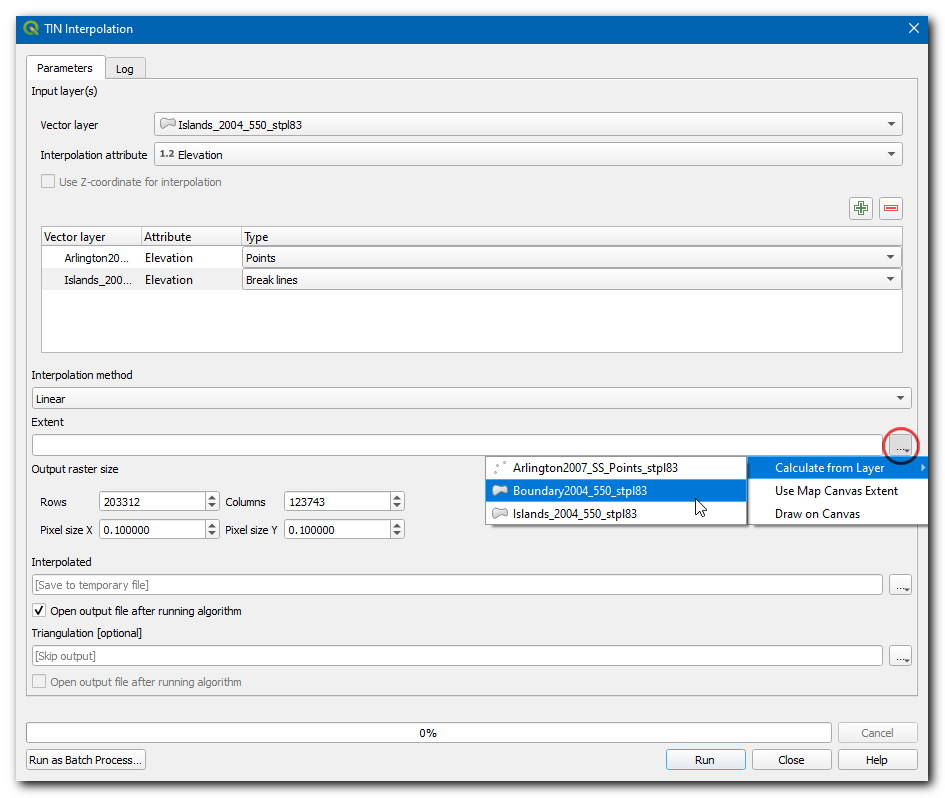
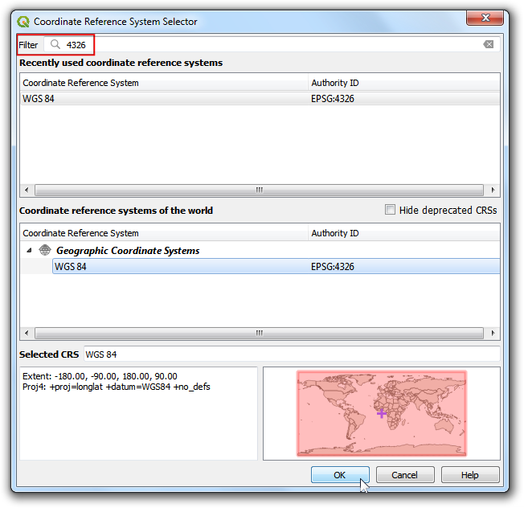
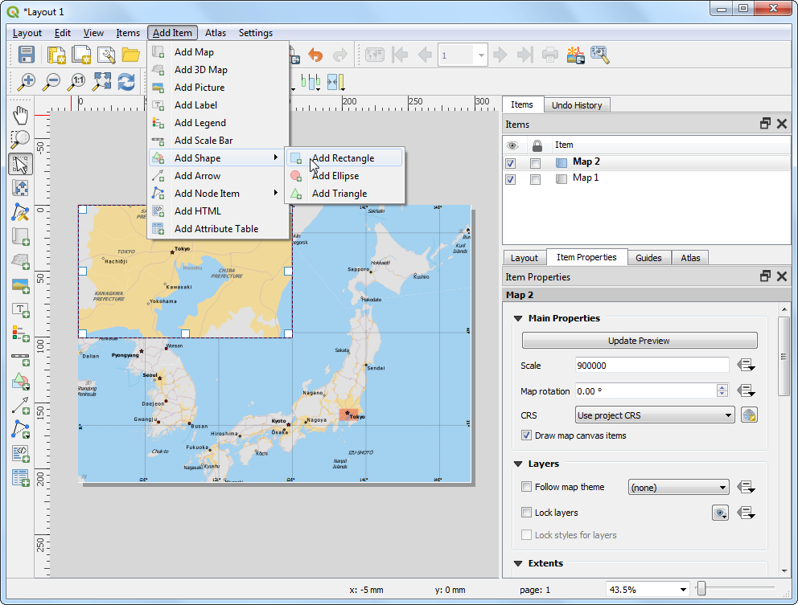
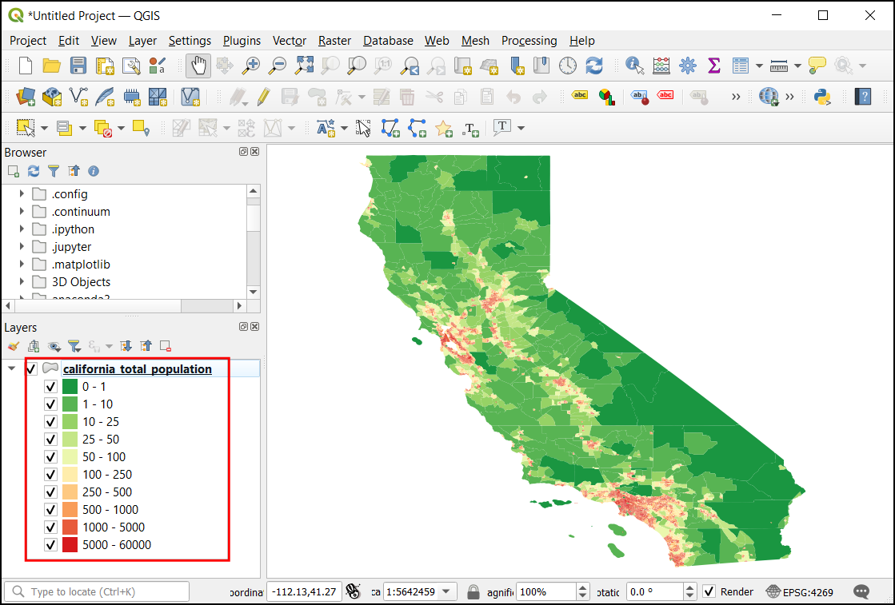

Analiza prekrivanja po več kriterijih (QGIS3)¶
Večkriterijska ponderirana analiza je postopek dodeljevanja območij na podlagi različnih lastnosti, ki jih morajo imeti izbrana območja. Čeprav je to običajna operacija GIS, jo je najbolje izvesti v rastrskem prostoru z uporabo pristopa, ki temelji na mreži.
Opomba
Vektorsko in rastrsko prekrivanje
Analizo prekrivanja vektorskih slojev lahko opravite z orodji za geoprocesiranje, kot so buffer, dissolve, difference in intersection. Ta metoda je idealna, če želite najti binarni ustrezen/neustrezen odgovor in delate s peščico slojev.
Delo v rastrskem prostoru vam omogoča razvrstitev primernosti - ne le najprimernejše lokacije. Omogoča tudi enostavno združevanje poljubnega števila vhodnih slojev in dodeljevanje različnih uteži posameznim merilom. Na splošno je to najprimernejši pristop za ugotavljanje primernosti lokacije.
V tem učbeniku je predstavljen tipičen potek dela za izvedbo analize primernosti lokacije - pretvorba izvornih vektorskih podatkov v ustrezne rastre, njihova ponovna razvrstitev in izvajanje matematičnih operacij.
Pregled naloge¶
V tem učbeniku bomo opredelili primerna področja za razvoj, in sicer
Blizu cest in
Stran od vodnih teles in
Ne na zaščitenem območju.
Pridobivanje podatkov¶
Uporabili bomo vektorske podatkovne sloje iz OpenStreetMap (OSM). OSM je globalna podatkovna zbirka prosto dostopnih osnovnih kartografskih podatkov. Geofabrik zagotavlja dnevno posodobljene shapefile podatkovnih nizov OpenStreetMap.
Uporabili bomo podatkovne sloje OSM za zvezno državo Assam v Indiji. Preneseni so bili Geofabrik India shapefiles, prirezani na državno mejo in zapakirani v eno datoteko GeoPackage. Kopijo geopaketa lahko prenesete s spodnje povezave:
Vir podatkov: [GEOFABRIK]
Postopek¶
V brskalniku QGIS poiščite preneseno datoteko
assam.gpkg. Razširite jo in povlecite vsakega od petih posameznih podatkovnih slojev na platno zemljevida. Na plošči Layers boste videli naložene slojeboundary,roads,protected_regions,water_polygonsinwater_polylines.

First step in the overlay analysis, is to convert each data layer to raster. An important consideration is that all rasters must be of the same extent. We will use the
boundarylayer as the extent for all the rasters. Go to . Search for and locate the algorithm. Double-click to launch it.

V pogovornem oknu Rasterize (vector to raster) izberite
roadskot Input layer. Ustvariti želimo izhodni raster, v katerem so vrednosti pikslov 1, če je cesta, in 0, če ceste ni. Vnesite1kot A fixed value to burn. Vhodni sloji so v projiciranem sistemu CRS, katerega enota so metri. IzberiteGeoferenced unitskot Output raster size units Nastavili bomo ločljivost izhodnega rastra na 15 metrov. Izberite15kot Width/Horizontal resolution in Height/Vertical resolution. Nato kliknite gumb … poleg Output extent in za Use extent for izberiteboundary.

Scroll down further and click the arrow button in the Assign a specific nodata value to output bands.

That field should now be set to
Not set. This is important because when raster calculator (which we will use later) encounters a pixel with nodata value in any layer, it sets the output to nodata as well, resulting is wrong output.

Scroll down to find the Advanced Parameters and select the profile
High Compressionto apply the compression. This will generate the compressed raster file of smaller size after running the tool. Applying lossless compression is highly recommended while working with raster data.

Set the Rasterized output raster as
raster_roads.tifand click Run.

Ko se obdelava konča, se na plošči raster_roads naloži nov sloj Layers. Privzeto oblikovanje bo prikazalo piksle s cestami kot bele, druge pa kot črne. Tudi druge 4 vektorske plasti želimo pretvoriti v rastre. Namesto da bi algoritem za rasterizacijo izvajali enega za drugim, lahko uporabimo vgrajeno funkcionalnost paketne obdelave in jih pretvorimo vse naenkrat. Za več informacij o paketni obdelavi glejte Batch Processing using Processing Framework (QGIS3) tutorial. Z desno tipko miške kliknite algoritem
Rasterize (vector to raster)in izberite Execute as Batch Process.

V pogovornem oknu Batch Processing kliknite gumb … v prvi vrstici stolpca Input layer. Izberite sloje
boundary,protected_regions,water_polygonsinwater_polylinester kliknite OK.

Opomba
This Advanced Parameters option is not available while executing the algorithm in batch mode. You will have to repeat the steps above for all the layer and skip steps 8 to 12 for applying compression on all the Rasterized outputs.
Parametre izpolnite z enakimi vrednostmi, kot smo jih uporabili v sloju cest. Po izpolnitvi prve vrstice parametra uporabite gumb , da dodate enako vrednost za vse plasti.

V zadnjem stolpcu Rasterized kliknite gumb … v prvi vrstici. Kot kot Autofill mode izberite
Fill with parameter valuesin Parameter to use izberiteInput layer. Kliknite OK.

Poiščite mapo v računalniku in sloj poimenujte
raster_. Vmesnik za paketno obdelavo bo samodejno dopolnil ime z imenom sloja in izpolnil vse vrstice. Prepričajte se, da je polje Load layers on completion označeno, in kliknite OK.

Ko se obdelava konča, se na plošči Layers naložijo 4 novi rastrski sloji. Opazili boste, da imamo 2 sloja, povezana z vodo - oba predstavljata vodo. Lahko ju združimo in tako dobimo en sam sloj, ki predstavlja vodna območja v regiji. Poiščite in poiščite algoritem v orodjarni Processing Toolbox. Z dvoklikom ga zaženite.

V polje Expression vnesite naslednji izraz. V polju Layers lahko kliknete na ustrezno plast, da se samodejno vstavijo imena plasti. Ta izraz pomeni, da želimo sešteti vrednosti pikslov v prvem pasu obeh vodnih rastrov. Kliknite gumb … ob polju Reference layer(s) in kot referenčni sloj izberite
raster_water_polygons. Poimenujte izhodno datotekoraster_water_merged.tifin kliknite Run.
"raster_water_polygons@1" + "raster_water_polylines@1"
Tako združen raster bo imel piksle z vrednostjo 1 za vsa območja z vodo. Opazili pa boste, da je na nekaterih območjih obstajal tako poligon z vodo kot poligon z vodo. Ta območja bodo imela piksle z vrednostjo 2, kar ni pravilno. To lahko popravimo s preprostim izrazom. Ponovno odprite algoritem .

Vnesite naslednji izraz, ki bo dodelil vrednost 1, če se izraz ujema, in 0, če se ne ujema. Kliknite gumb … poleg Reference layer(s) in izberite sloj
raster_water_merged. Rezultat poimenujteraster_water.tifin kliknite Run.
"raster_water_merged@1" > 0
Nastali sloj
raster_waterima zdaj piksle samo z vrednostmi 0 in 1.

Zdaj, ko imamo plasti, ki predstavljajo piksle cest in vode, lahko ustvarimo rastre bližine. Ti so znani tudi kot evklidske razdalje - vsaka piksla v izhodnem rastru predstavlja razdaljo do najbližjega piksla v vhodnem rastru. Ta dobljeni raster lahko nato uporabimo za določitev primernih območij, ki so v določeni razdalji od vhodnega. Poiščite in najdite algoritem . Z dvojnim klikom ga zaženite.

In the Proximity (Raster Distance) dialog, select
raster_roadsas the Input layer. ChooseGeoreferenced coordinatesas the Distance units. As the input layers are in a projected CRS with meters as the units, enter5000(5 kilometers) as the Maximum distance to be generated. Make sure the Nodata value to use for the destination proximity raster value isNot set.

You can expand the Advanced Parameters and select the profile
High Compressionto apply the compression. Name the output file asroads_proximity.tifand click Run.

Opomba
It may take upto 15 minutes for this process to run. It is a computationaly intensive algorithm that needs to compute distance for each pixel of the input raster and our input contains over 1 billion pixels.
Po končani obdelavi bo na ploščo Layers dodan nov sloj
roads_proximity. Za boljšo vizualizacijo spremenimo privzeto oblikovanje. Kliknite gumb Open the Layer Styling panel na plošči Layers. Vrednost Max spremenite na5000v razdelku Color gradient.

Ponovite algoritem Proximity (Raster Distance) za sloj
raster_waterz enakimi parametri in poimenujte rezultatwater_proximity.tif.

Po končani obdelavi lahko uporabite podobno oblikovanje kot prej, da si bolje predstavite rezultate. Če kliknete po dobljenem rastru, boste videli, da gre za kontinuiteto vrednosti od 0 do 5000. Če želimo ta raster uporabiti v analizi prekrivanja , ga moramo najprej ponovno razvrstiti, da ustvarimo diskretne vrednosti. Ponovno odprite algoritem .

Pikslom, ki so v bližini cest, želimo dodeliti višje število točk. Zato uporabimo naslednjo shemo.
0-1000m -> 100
1000-5000m -> 50
>5000m -> 10
Vnesite naslednji izraz, ki za vnos uporabi zgornja merila. Kliknite gumb … poleg Reference layer(s) in izberite sloj
roads_proximity. Izhodno datoteko poimenujteroads_reclass.tifin kliknite Run.100*("roads_proximity@1"<=1000) + 50*("roads_proximity@1">1000)*("roads_proximity@1"<=5000) + 10*("roads_proximity@1">5000)
Ko se postopek preklasifikacije konča, se na ploščo Layers doda nov sloj
roads_reclass. Ta sloj ima samo tri različne vrednosti, 10, 50 in 100, ki označujejo relativno primernost pikslov glede na oddaljenost od cest. Ponovno odprite algoritem .

Ponovite postopek ponovnega razvrščanja za sloj
water_proximity. Tu bo shema obratna, saj bodo piksli, ki so bolj oddaljeni od vode, imeli višje število točk.
0-1000m -> 10
1000 -5000m -> 50
>5000m -> 100
Vnesite naslednji izraz, ki za vnos uporabi zgornja merila. Kliknite gumb … poleg Reference layer(s) in izberite sloj
water_proximityPoimenujte izhodwater_reclass.tifin kliknite Run.100*("water_proximity@1">5000) + 50*("water_proximity@1">1000)*("water_proximity@1"<=5000) + 10*("water_proximity@1"<1000)
Zdaj smo pripravljeni na končno analizo prekrivanja. Spomnite se, da so naša merila za določanje primernosti naslednja - blizu cest, stran od vode in ne na zaščitenem območju. Odprite . Vnesite naslednji izraz, ki uporablja ta merila. Upoštevajte, da rezultat na koncu pomnožimo z
raster_boundary@1, da izločimo vrednosti pikslov zunaj državne meje. Kliknite gumb … poleg Reference layer(s) in izberite slojraster_boundary. Izpis poimenujteoverlay.tifin kliknite Run.
("roads_reclass@1" + "water_reclass@1")*("raster_protected_regions@1" != 1 )*"raster_boundary@1"
Opomba
V tem primeru dajemo enako težo bližini ceste in vode. V resničnem življenju imate lahko več meril z različno pomembnostjo. To lahko simulirate tako, da v zgornjem izrazu pomnožite rastre z ustreznimi tehtnicami. Če je na primer bližina cest dvakrat pomembnejša od bližine vode, lahko raster roads_reclass v zgornjem izrazu pomnožite z 2.
Ko se obdelava konča, se nastali rastrski
pregleddoda na ploščo Layers`. Vrednosti pikslov v tem rastru se gibljejo od 0 do 200 - pri čemer je 0 najmanj primerno, 200 pa najbolj primerno območje za razvoj. Kliknite gumb Open the Layer Styling panel na plošči Layers.

Izberite izrisovalnik
singleband_pseudocolorin barvno rampoSpectral. Kliknite Classify, da uporabite barvno lestvic za raster.

Kliknite privzete vrednosti oznak poleg vsake barve in vnesite ustrezne oznake. Oznake se bodo pojavile tudi kot legenda pod slojem
overlay.

Rastrski sloji so pravokotne mreže. Želimo skriti piksle zunaj državne meje. To lahko preprosto dosežemo tako, da na vektorski mejni sloj uporabimo izris Inverted Polygons`. Na plošči Layers se pomaknite navzdol in poiščite plast
boundary. Kot upodabljajoči element izberiteInverted Polygons, druge možnosti pa pustite privzete.

Da se učinek upodobitve prikaže, mora biti na vrhu kazala vsebine. Z desno tipko miške kliknite sloj
boundaryin izberite Move to Top.

Preverite sloj in karta se bo posodobila, tako da bo prikazan raster
overlay, prirezan na slojboundary. To je končni rezultat, ki prikazuje območja v državi, ki so primerna za razvoj.

If you want to give feedback or share your experience with this tutorial, please comment below. (requires GitHub account)